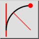
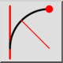
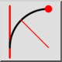
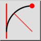

Tangent, punt en straal
Werkbalk / icoon:
 

Menu: Tekenen > Boog > Tangent, punt en straal
Sneltoets: A, T
Opdrachten: arctangentpointradius | at
Dit is een automatische vertaling.
Werkbalk / icoon:
 

Menu: Tekenen > Boog > Tangent, punt en straal
Sneltoets: A, T
Opdrachten: arctangentpointradius | at
Tekent een boog met een bepaalde straal, tangentieel aan een entiteit en door een punt.